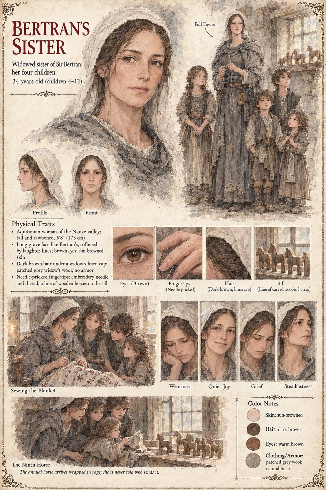

Bertran's Sister
Widowed sister of Sir Bertran de Lanta · mother of four · valley of the Nauze · about 34 years old by her sheet
She never appears on the page. The manuscript gives Bertran a widowed sister in the valley of the Nauze, with four children, and one other thing besides: it is her embroidered woolen blanket, patterned with horses, that he lies under in the narrow chamber above the armory at Castelmaur, working the same small piece of arithmetic in the dark. For nine years he has carved wonderfully accurate pearwood horses in the evenings, ears laid back and tails half-lifted, and sent them to the children wrapped in rags; and not one of them has ever been told who makes them. It is the private life that the household of Castelmaur would have said he did not have.
The last horse the manuscript follows is the one he finishes in the last week of Iverin, a grey gelding with one raised hoof, which he turns in his palm while thinking of how the stranger sheathed both swords, left and right, like a man closing a book. When he rides out of the barony after the burning he carries a small wooden horse in his saddlebag; and in the fourteenth year he sets a grey gelding with one raised hoof on the bench of the last house at Lasserra and walks away. The text does not say whether that is the same horse, or whether his sister ever learns who the carver was. The sheet's thirty-four years, the children's ages (four to twelve), her needle-pricked fingertips and the row of horses on the sill are its own, as is its caption that she is never told who sends them.